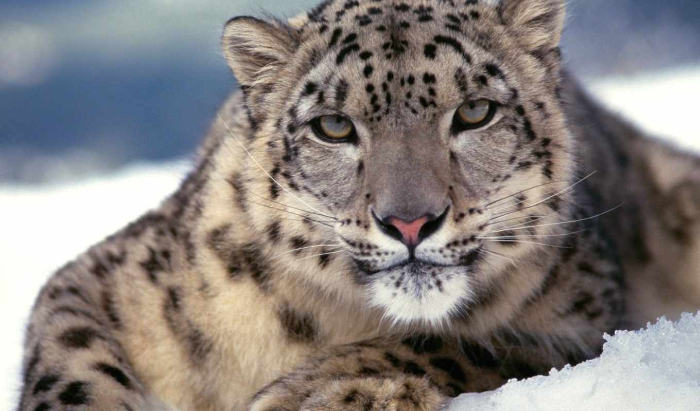
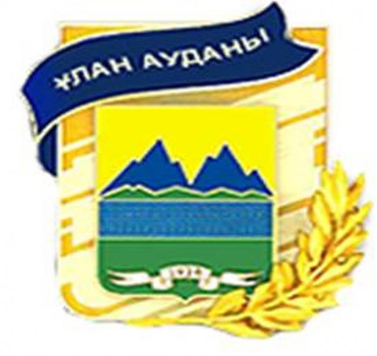
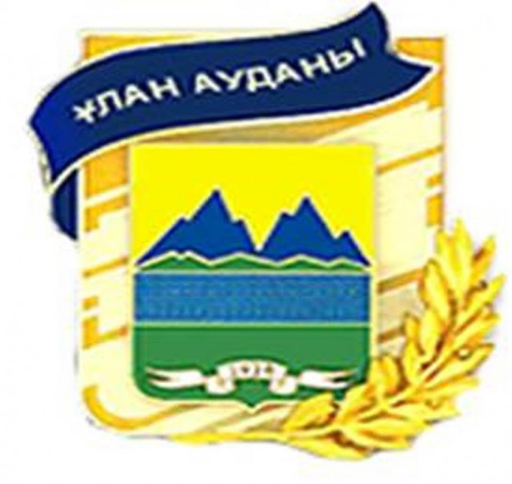
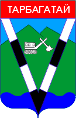
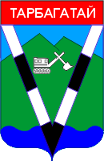

Для Восточного Казахстана характерно большое разнообразие природно-климатических зон.Преобладают горный, горно-таежный, горно-луговой, лесной, лесостепной, степной, долинный, полупустынный и пустынный ландшафты.
Насчитывается около 2000 озер площадью от 1 га до 528 кв. км. Наиболее крупные - Маркаколь, Зайсан, Сибинские, Маралье, Рахмановское, Кемерколь, Сасыкколь, Алаколь.
Восточный Казахстан - основной поставщик ценнейших лекарственных растений для фармацевтической промышленности (облепиха, родиола розовая (золотой корень), левзея софлоровидная (маралий корень), копеечник (белочный корень).
Богата и разнообразна фауна области. Здесь обитают более 400 видов птиц, около 60 видов млекопитающих. Это медведь, белка, горностай, ласка, бурундук, летяга, рысь, соболь, росомаха, волк, лисица, заяц, лось, марал, косуля, барс, архар, сибирский горный козел, дикий кабан, многие виды грызунов, пресмыкающихся. Из птиц: лебедь-кликун, черный аист, серебристая чайка, крохаль, свиязь, гуси, журавли, бакланы и многие другие.
Реки и озера богаты рыбой (язь, лещ, сазан, щука, ускуч, форель, таймень, судак, хариус, окунь, карась).
Предгорные равнины характеризуются преобладанием ковыльно-разнотравных и ковыльно-типчаковых степей.
В Зайсанской котловине развиты полынные и полынно-солянковые пустынные степи.

 

 
